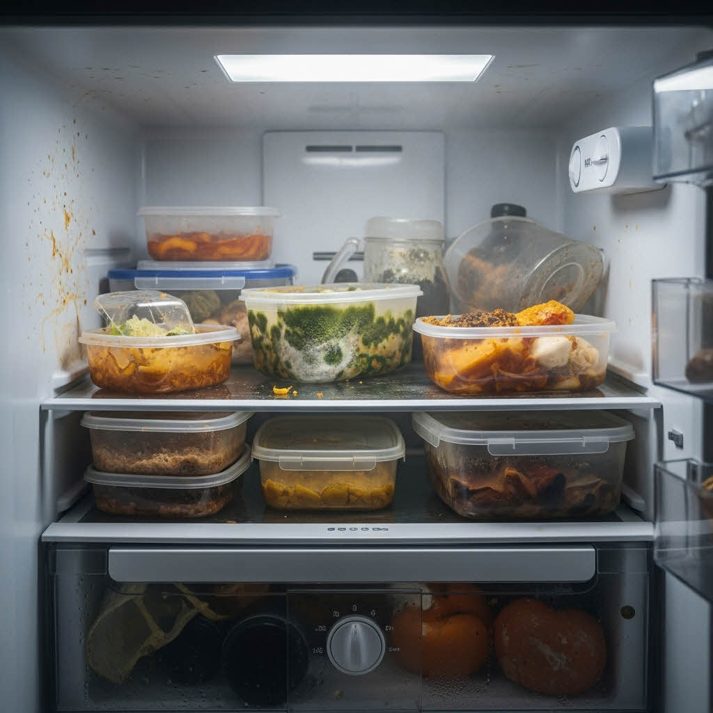
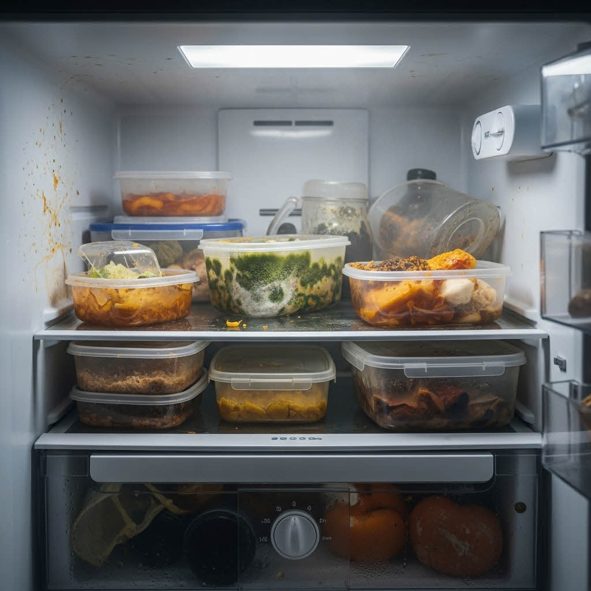
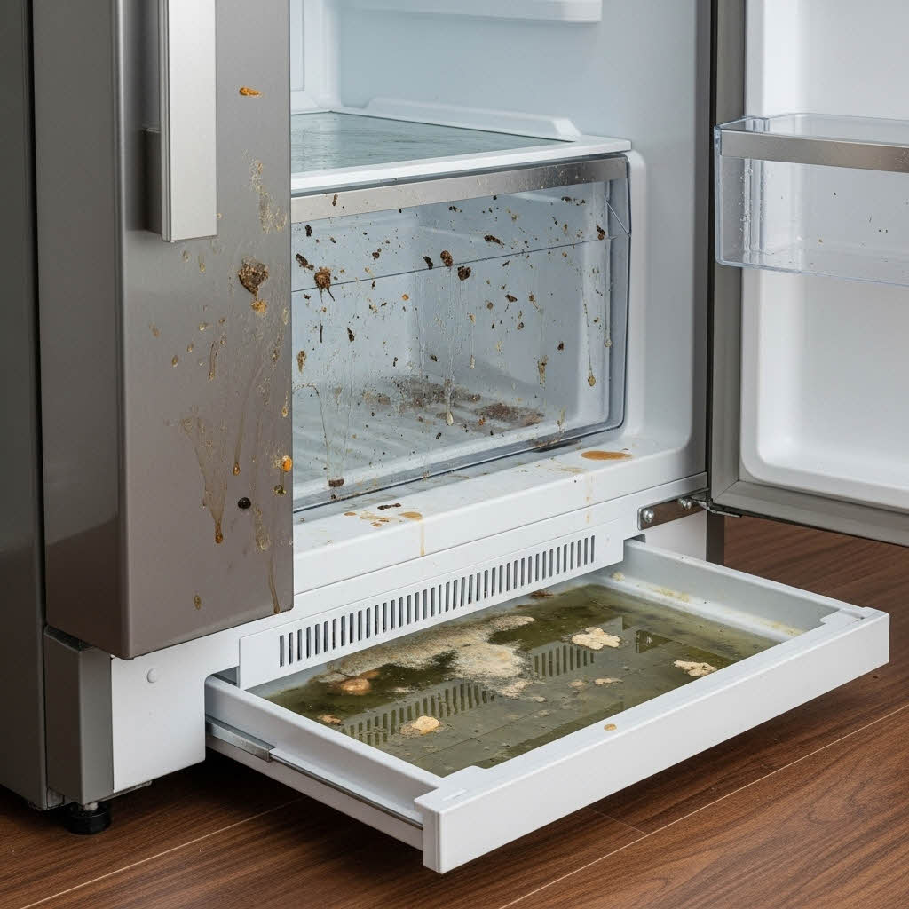
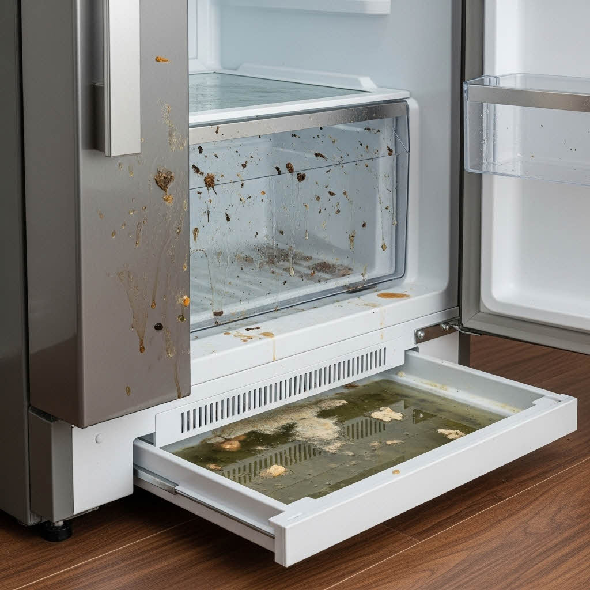
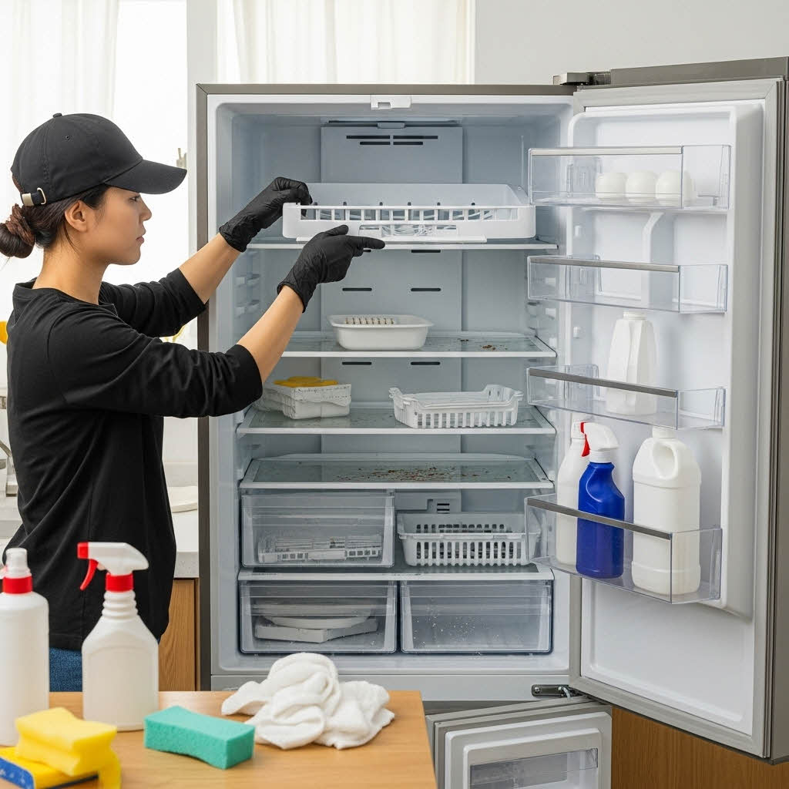
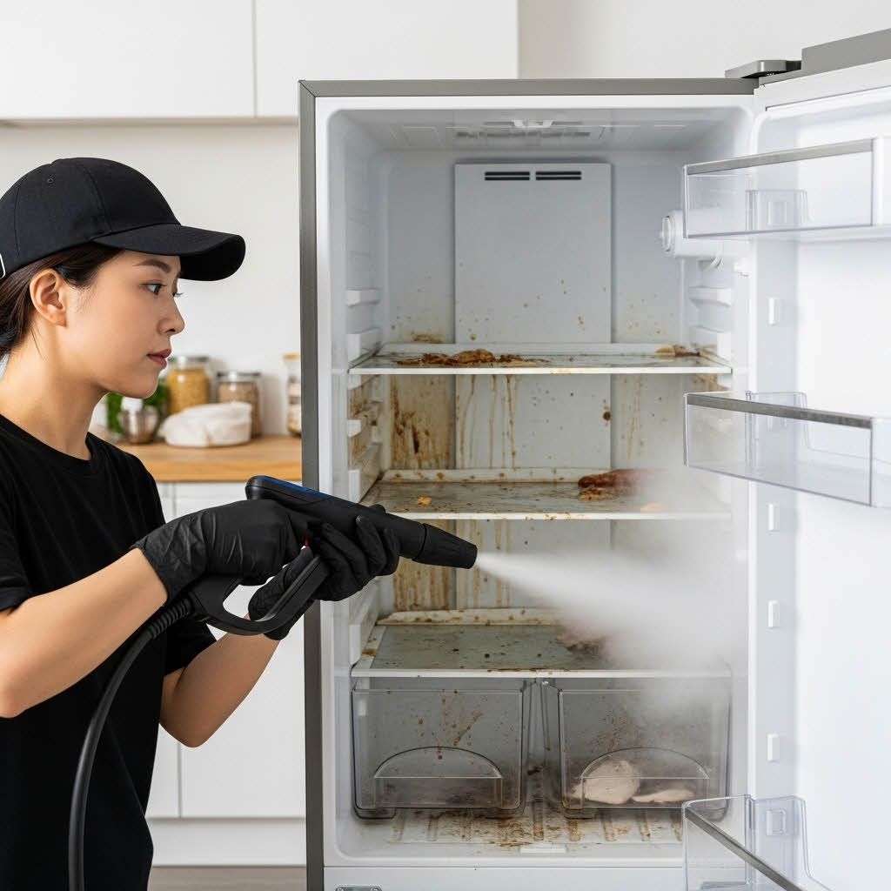
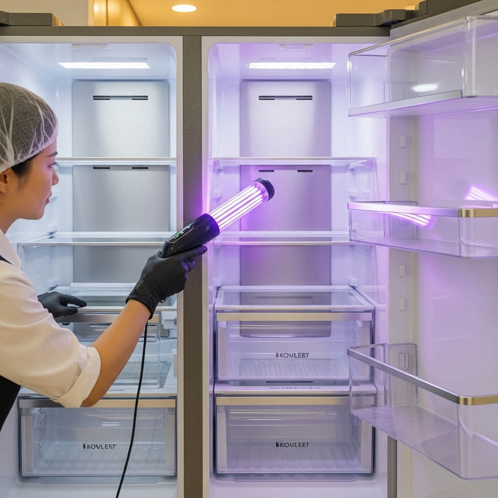

전문장비로 원스톱 위생 솔루션
기업 위생 가전 소독 관리 전문 업체
제안 배경
직원들의 건강과 복지, 그리고 기업의 생산성은 안전한 근무 환경에서 시작됩니다. 다중이용 시설인 기업 사무실에서 공동으로 사용하는 위생 가전은 "보이지 않는 감염 위험 구역"입니다.
A. 기업 내 위생 가전의 현실 (Risk Assessment)
기업 내 위생 가전은 가정용 대비 사용 빈도(하루 수백 회)가 현저히 높아 오염 가속도가 빠르고, 세균 번식에 취약합니다.
- 오염 가속: 냉장고, 정수기, 제빙기 내부 등에서 곰팡이와 물때 발생 속도 증가.
- 감염 위험: 전자레인지, 키보드, 비데 노즐 등에서 식중독균 및 전염성 병원균 노출 위험 상존.
- 관리 한계: 대부분의 기업이 단순 외관 청소에 그치거나 관리 시기를 놓쳐 근본적인 위생 문제가 해결되지 않고 내부 오염원이 방치됩니다.

제빙기의 소독 전후

커피머신의 소독 전후

냉장고의 소독 전후

전자렌지의 소독 전후

화장실 비데의 소독 전후

사무실 책상의 소독 전후

인덕션의 소독 전후
B. 중점 관리 대상 가전의 위협
당사의 전문 관리가 필요한 주요 대상입니다.
- 냉장고, 전자레인지, 제빙기, 정수기, 커피머신, 비데, 칫솔살균기, 에어컨, 공기청정기, 사무용품, PC/키보드 등

대상 가전의 종류
기술력
첨단 기술을 기반으로 고객사의 위생 환경을 정밀하게 진단하고 과학적인 데이터를 제공하여 관리의 신뢰도를 높입니다.
- 친환경 고강도 분해 살균 기술: 친환경 소독제를 사용해 설비를 분해하고, 곰팡이와 바이오필름을 제거하는 클린메이트만의 특화 기술.
- ATP(Adenosine Triphosphate) 측정: 육안으로 확인되지 않는 생물학적 오염도(세균, 잔여물)를 측정하여 오염 취약지점을 정확히 진단하고, 작업 전후 결과를 데이터로 제공.
- 건조 시스템: 살균 후 고습 환경 방지를 위해 고성능 건조 시스템을 적용하여 곰팡이 재번식 환경을 차단.
- 유지 보수 및 리포트 제공: 정기적인 관리 주기 제공 및 관리 보고서 제공을 통해 위생 관리의 투명성 확보.

위생 관리의 과학적 기준, ATP 측정
협력 체계
전문적인 협력사를 통해 서비스의 폭을 확장하고 품질을 강화합니다.


주요 협력 체계
냉장고 위생 관리 솔루션 (MOS)
기업용 냉장고, 왜 반드시 전문 관리가 필요한가?
기업 내 공용 냉장고는 하루에도 수십~수백 회 열리고 닫히며, 다양한 음식물과 식품 용기가 반복적으로 드나드는 고위험 위생 구역입니다. 많은 사람들이 사용하는 환경 특성상, 냉장고 내부는 세균과 곰팡이가 빠르게 번식하기 위한 최적 조건을 갖추고 있습니다. 또한 냉장고 내부의 온도 변화, 다량의 식품 수분, 사용자의 손 접촉 등은 교차 오염을 지속적으로 유발하며, 이는 결국 사내 감염 위험 증가와 식중독 유발 요인이 됩니다.
실제 현장 위생 문제 사례
- 내부 패킹이나 선반에 곰팡이가 누적된 경우 (이미지: n8/0032.jpg)
- 이름 없는 음식물 보관으로 인해 발생하는 악취와 세균 확산 (이미지: n8/0033.jpg)
- 냉동칸의 성에·얼음층 사이에서 번식하는 고온성·저온성 균류 (이미지: n8/0037.jpg)
- 문 손잡이 및 고무 패킹의 반복 접촉으로 인한 고농도 ATP 수치 (이미지: n8/0036.jpg)
- 외관, 주변, 필터 및 물받이의 오염 (이미지: n8/0035.jpg)
 


 

냉장고 위생 점검 체크리스트
기업 환경에서 냉장고 위생 상태를 스스로 평가하거나, 정기 관리 필요 시점을 파악하는 데 사용되는 주요 점검 항목입니다.
주요 점검 항목 개요
- 기본 점검: 문 손잡이 끈적임, 고무 패킹의 곰팡이/변색, 내부 선반 얼룩, 서랍 물고임, 필터 및 트레이 하단 오염 등을 확인합니다.
- 냉동칸 점검: 얼음 표면 이물질, 냉동칸 바닥의 변색, 보관 용기 외부 얼룩 등을 확인합니다.
- 공기질 점검: 문을 열었을 때 강한 악취 발생 여부, 식품과 무관한 냄새 지속 여부, 내부 공기 흐름 약화 여부를 진단합니다.
- 관리 필요 신호: 직원들의 냄새 관련 불만 발생, 오래 보관된 음식물 다량 존재, 보관 용도 외 물품이 섞여 있는 경우입니다.
| 구분 | 점검 항목 |
|---|---|
| 문/패킹 | 손잡이 끈적임, 고무 패킹 곰팡이/변색 |
| 내부/선반 | 선반 얼룩/흘러내림, 서랍 물고임/누수 |
| 냉동실 | 얼음 이물질, 바닥 얼음층 변색, 용기 외부 얼룩 |
| 공기/냄새 | 강한 악취 발생, 식품 무관 냄새 지속, 공기 흐름 약화 |
| 관리 신호 | 직원 불만, 장기 보관 식품, 비식품 혼재 |
냉장고 위생 체크리스트
냉장고 전문 분해·소독 프로세스 (5단계)
클린메이트는 제조사별 구조 특성을 기반으로, 단순 표면 청소가 아닌 정밀 분해·살균·건조·재조립의 5단계 전문 프로세스를 적용합니다.
1단계 — ATP 바이오 오염도 진단
ATP 측정기를 활용해 손잡이·패킹·선반 프레임·서랍 내부 등 고접촉 구역의 오염도를 수치(RLU)로 측정합니다. 초기 오염도와 최종 개선도를 고객사에 데이터로 제공하여 과학적 위생 관리를 가능하게 합니다. 위험 기준치 초과 항목을 별도 표시하여 집중 관리합니다.

2단계 — 냉장고 구조 분해
선반, 패킹, 서랍, 냉동칸 구성품, 도어 트레이 등 탈부착 가능 항목을 모두 분리합니다. ▲보이지 않는 틈새 ▲물이 고이는 구간 ▲패킹 내부 틈 등 세균이 은폐되는 구역을 정확히 식별하며, 부품별 오염 레벨 기록 후 다음 소독 단계에 반영합니다.
3단계 — 고강도 살균 및 곰팡이 제거
식품 안전 인증을 받은 친환경 소독제를 사용하여 살균합니다. 곰팡이, 바이오필름, 기름때, 음식물 잔여물이 집중 분포된 지점 중심으로 살균하며, 내부 벽면·도어 패널·선반 결착부 등 공조가 어려운 지점까지 수기 및 장비 혼합 방식으로 작업합니다.
4단계 — 냄새·유증기·세균 재발 방지 소독
냄새 요소(부패균·단백질 잔여물)를 분해하여 내부 공기질을 개선합니다. 항균 자외선을 추가 적용하여 일정 기간 세균 재번식을 억제하고, 관리 주기 중 발생할 수 있는 악취 재발 현상을 최소화합니다.
5단계 — 사후 ATP 재측정 및 보고서 제공
작업 완료 후 동일 지점을 재측정하여 개선 수치를 비교합니다. 작업 전/후의 RLU 데이터와 현장 사진을 담은 보고서를 제공하여 관리의 투명성과 효과를 증명합니다.

기업은 직원 복지 향상, 위생 리스크 감소, 감염 예방을 위해 주기적 관리가 필수적이며, 단순한 내부 닦기 수준의 관리로는 이러한 오염 문제를 해결할 수 없습니다.
실적: 주요 관리 사례
다양한 규모의 기업 및 기관의 위생 가전을 성공적으로 관리한 실적을 통해 신뢰도를 입증합니다.
제빙기 스케일 및 살균 관리
제빙기 위생 문제의 심각성
제빙기는 내부 구조가 복잡하여 물때와 스케일(석회질)이 쉽게 끼고, 이는 곰팡이와 미생물 번식의 온상이 됩니다. 이로 인해 얼음에서 역한 냄새가 나거나, 미생물에 오염된 얼음으로 인해 음료를 마시는 직원들의 건강을 위협할 수 있습니다.

제빙기 내부 곰팡이 및 물때
클린메이트의 제빙기 솔루션
단순 물 세척이 아닌, 제빙기 전용 살균제를 사용하고 부품을 분해하여 근본적인 오염을 제거하는 전문 프로세스를 적용합니다.
- 분해 세척: 물통, 아이스버킷, 노즐, 급수 펌프 등 모든 부품을 분해하여 손이 닿지 않는 부분까지 세척 및 살균.
- 스케일 제거: 전용 약품을 사용하여 석회질을 안전하게 녹여 제거.
- 잔여물 제거: 세척 후 모든 약품 잔여물을 깨끗하게 제거하여 2차 오염 방지.

제빙기 분해 세척 과정
전자레인지 위생 및 악취 관리
전자레인지, 세균 번식의 사각지대
전자레인지는 음식물의 잔여물, 튀긴 국물 등이 내부 벽면과 천장에 그대로 눌어붙어 탄화되면서 고질적인 악취와 세균 번식의 주요 원인이 됩니다. 많은 사람이 공동으로 사용하는 환경일수록 오염도는 더욱 심각해집니다.

전자레인지 내부 눌어붙은 음식물
드라이아이스(CO₂) 세척 솔루션
고체 이산화탄소인 드라이아이스를 고압으로 분사하여 오염물을 순간적으로 동결, 파쇄 및 기화시켜 악취와 오염을 동시에 제거합니다. 물이나 화학 약품을 사용하지 않아 2차 오염이 없고, 빠르게 건조됩니다.
- 비접촉 세척: 설비 손상 없이 오염물만 선택적으로 제거.
- 살균 효과: 순간적인 냉각으로 미생물 살균 효과 발생.
- 잔여물 없음: 세척 후 잔여물(CO₂)이 기화하여 폐기물 발생 Zero.

드라이아이스 세척 기술
위생 관리 전문 기술력
고객의 신뢰를 위한 클린메이트의 기술 및 법적 역량입니다.
사업자 등록 및 법적 요건
클린메이트는 기업 위생 관리 분야의 법적 요건을 충족하는 정식 사업자입니다.


사업자등록증 및 위생관리업 신고증
주요 인증 및 특허
위생 관리 분야의 전문성과 기술력을 인정받은 각종 인증 및 특허를 보유하고 있습니다.
보유 기술 및 인증서
공식 협력사 및 주요 고객사
클린메이트는 다양한 산업 분야의 선도 기업들과 협력하며 성장하고 있습니다.
공식 협력 체계
업계 최고 수준의 설비 및 친환경 약품 공급사들과의 공식 협력관계를 통해 최상의 서비스를 제공합니다.
공식 협력사 로고
원스톱 무료 위생 상담
현재 기업 환경에서 가장 시급한 위생 관리 문제가 무엇인지 진단해 보세요.
Q1. 귀사에서 가장 위생 관리가 시급한 기기는 무엇인가요?
Q2. 냉장고의 주요 문제는 무엇인가요?
Q3. 제빙기/정수기의 주요 문제는 무엇인가요?
Q4. 전자레인지의 주요 문제는 무엇인가요?
Q5. 커피머신의 주요 문제는 무엇인가요?
상담 준비가 완료되었습니다.
선택해주신 내용을 바탕으로
빠르게 맞춤 솔루션을 안내해 드립니다.